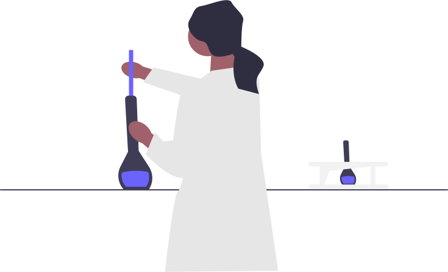

Logo (PNG1080p) - Vector69Com.png)
Digitalisasi Pendidikan
Lingkungan
Literasi digital memungkinkan individu untuk menggunakan teknologi secara
efektif dalam mempelajari dan memahami isu lingkungan. Dengan literasi digital, siswa dapat
mengakses informasi, berkolaborasi, dan mengembangkan pemahaman tentang pengetahuan alam dan
menumbuhkan rasa cinta terhadap lingkungan sekitar (district amor) demi menjaga keberlanjutan lingkungan.
